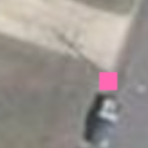
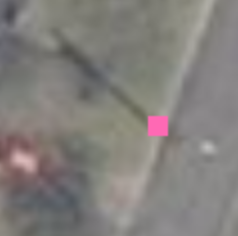
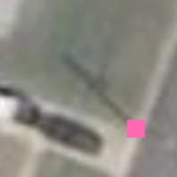

Lamp Post |
Finding the Lamp Post
Often, the lamp post is not actually visible, but its shadow is. Here is a sample procedure we use to annotate lamp posts:
- Find the lamp post's shadow in an image.
- Looking at buildings, determine which way the shadows fall
- Identify where the shadow originates from
- Annotate a point at the base of a shadow
See some example annotations below:
 |
 |  |  |